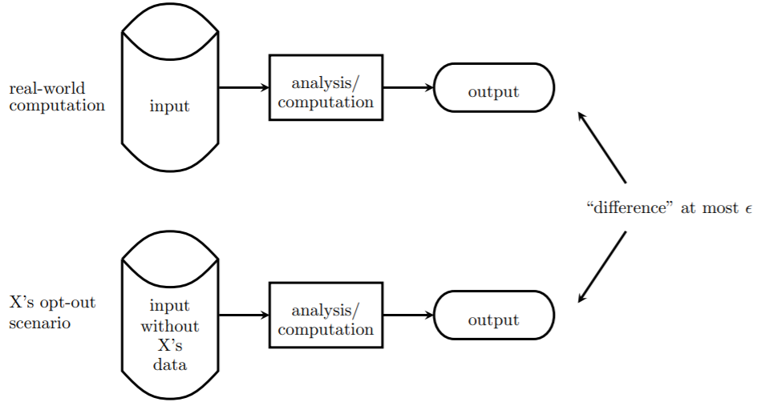

Differential privacy is a strong, mathematical definition of privacy in the context of statistical and machine learning analysis. It is used to enable the collection, analysis, and sharing of a broad range of statistical estimates, such as averages, contingency tables, and synthetic data, based on personal data while protecting the privacy of the individuals in the data.
The above diagram represents the information contained in data under the view of DP. Thus, general information is any information, what doesn’t specific to any individual data subject. General information can be understood is the information of the entire population in the data (not only an individual or a group of data subjects). The contrast of general information is private information, what specifics to any individual data subject.
How can we distinguish between private information and general information?
To understand, first, we need to understand the privacy loss parameter.
What can be learned about an individual as a result of her private information being included in a differentially private analysis is limited and quantified by a privacy loss parameter, usually denoted epsilon (ε). Privacy loss can grow as an individual’s information is used in multiple analyses, but the increase is bounded as a function of ε and the number of analyses performed.
In simple terms, "privacy loss parameter," or "epsilon(ε), " which determines just how much specificity a data collector is willing to sacrifice for the sake of protecting its users' secrets.

During this process, how much any individual contributes to the result of a database depends in part on how many people's data are involved in the query. If the database contains data from a single person, that person's data contribute 100%. If the database contains data from a hundred people, each person's data contributes just 1%. The key insight of differential privacy is that as the query is made on the data of fewer and fewer people, more noise needs to be added to the query result to produce the same amount of privacy.